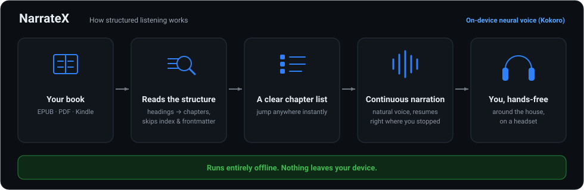
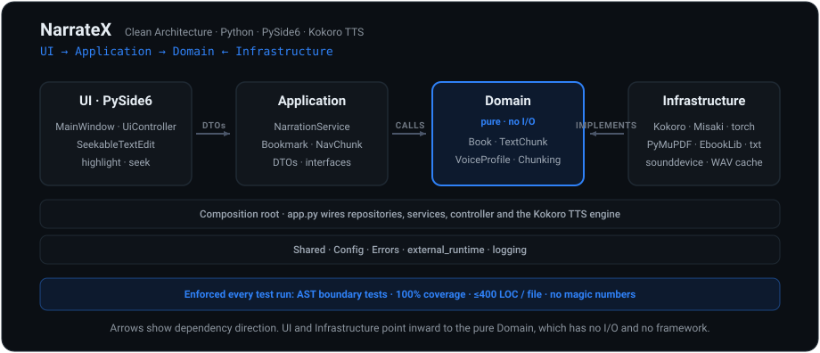

NarrateX
Built for long-form listening. Runs locally. Behaves predictably.
NarrateX is for listening to what you would otherwise have to sit and read. Use it at your computer on any operating system, or send it to a wireless headset and keep listening, hands-free, while you move around the house and get on with everything else.

Core behaviour
How it works

Architecture you can leave running
A reader you leave running for hours cannot stutter because a UI event reached into the playback core. So that core is a pure domain with no I/O and no framework, inside a four-layer architecture with every dependency pointing inward. Layer boundaries, 100% coverage and a 400-line file limit are enforced by automated architecture tests on every run.

Why this exists
Most tools treat documents as flat text streams. This leads to broken navigation, skipped sections and inconsistent playback.
NarrateX treats books as structured systems. Structure is preserved, navigation is derived from it and playback follows it.
Supported formats
Runs on every desktop
One codebase, native packages on Windows, macOS and Linux. Everything runs locally, the same way on each.
Execution model
Text is processed into structured chunks. Audio is generated and streamed continuously.
Playback begins immediately and continues without interruption. Everything runs locally which keeps the system fast, predictable and private.
Frequently asked questions
Is NarrateX free?
Yes. NarrateX is free and open source, released under the GNU LGPL-3.0 licence.
Does NarrateX work offline?
Yes. NarrateX runs entirely on your device with no cloud dependency. Nothing you read is uploaded anywhere.
What does the narration sound like?
NarrateX uses the Kokoro neural text-to-speech voice running locally on your machine, so it sounds natural rather than robotic, with no internet connection required.
Which file formats can NarrateX read?
EPUB, PDF and plain text natively, plus Kindle formats such as MOBI, AZW and AZW3 via optional Calibre conversion to EPUB.
Which platforms does NarrateX run on?
Windows, macOS and Linux, shipped as an installer, a disk image (.dmg) and a Flatpak respectively.